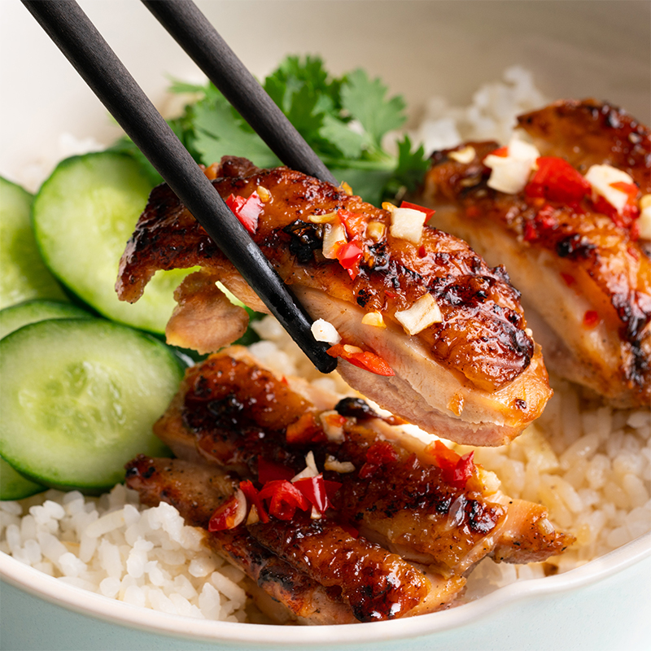

Banh Mi Recipe

A very aromatic and delicious vietnamese chicken dish that will always leave you wanting more!
Ingredients
- Chicken thighs
- Fish sauce
- Lemongrass
- Garlic
- Sugar
- Black pepper
Steps
- Place the chicken in a large bowl. Add the fish sauce, lemongrass, garlic, sugar, and pepper.
Mix well
- Preheat barbeque grill or frying pan. Remove chicken from marinade and cook for about 5 minutes
each side or until cooked to your liking. Set aside for 5 minutes to rest.
- Serve with steamed rice, cucumber, and cilantro. Drizzle nuoc mam sauce over rice bowl.
Return to main page